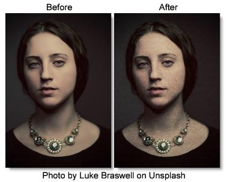

Texture
Description
Applies textures to an image for a stylized look.
Category
Stylize.
Controls
Presets
To select a preset, pick one from the Presets window.
Amount
Sets the amount of texture applied to the image.
Complexity
Generates a more detailed, repetitive texture.
Randomize
Randomizes the texture.
Transform
Transform the texture using Position, Scale, Rotate, Corner-Pin, Shear and Crop controls. Go to the
Transform section of Common Filter Controls to see how the Transform Controls work.